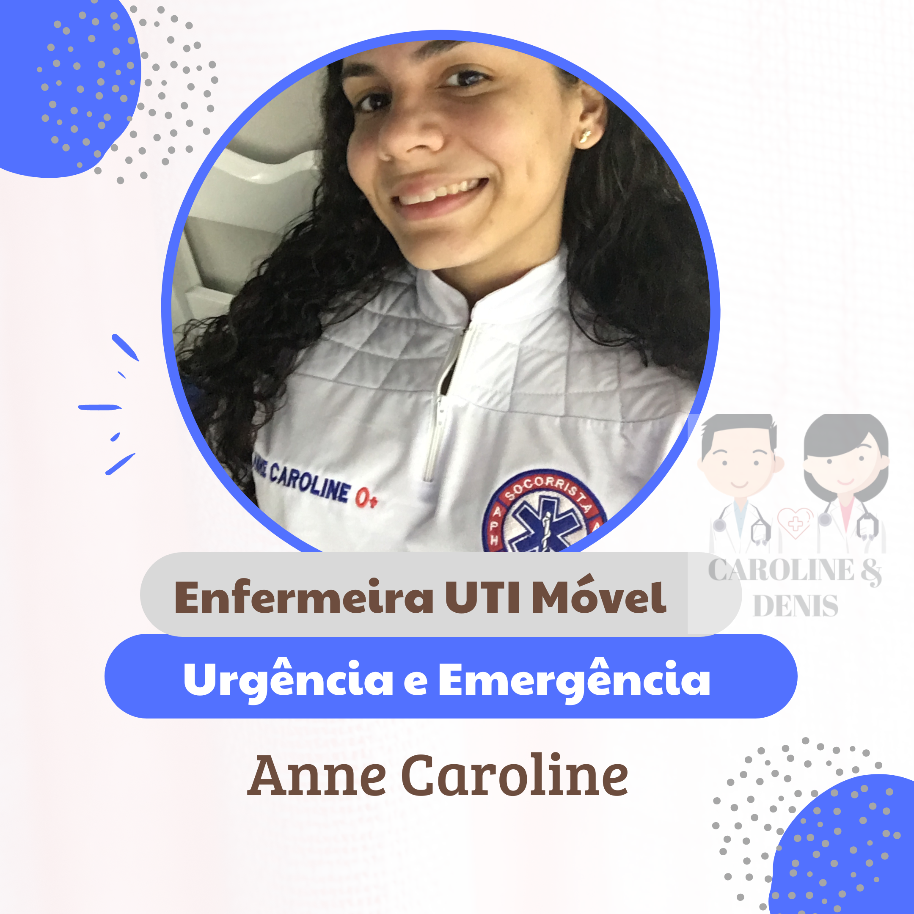

- 
Acreditamos na importância de um ambiente que preserve a vida e saúde de crianças e adolescentes e no empoderamento dos profissionais da educação, cuidadores e familiares, para que sejam multiplicadores de práticas de saúde e segurança.
Produzir conhecimento de qualidade que favoreça a transformação de práticas que possam reduzir a morbidade e mortalidade de crianças e adolescentes em todo o Brasil.